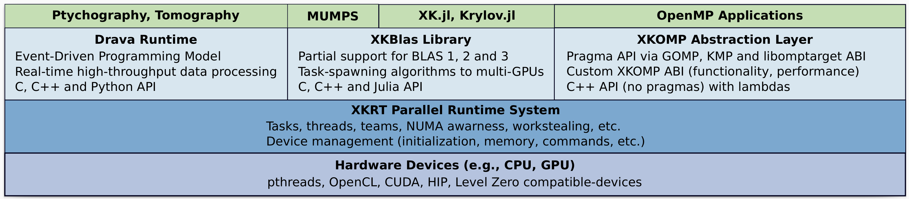

Loading...
Searching...
No Matches
XKRT
XKaapi Runtime (XKRT) - A parallel runtime system for macro-dataflow on multi-devices architectures.
XKRT is a macro-dataflow and tasking runtime system for automating memory management alongside parallel execution. It provides portable abstraction for C, C++, Julia and partial support for BLAS and OpenMP.
Please open any issue at https://github.com/rpereira-dev/xkrt
Related Projects
This repository hosts the XKRT runtime system.
Other repository hosts specialization layers built on top of the runtime:
- Drava is an event-driven programming model and runtime system, for real-time high-throughput data processing.
- XK.jl Julia bindings of XKRT and XKBlas
- XKBlas is a multi-gpu BLAS implementation that allows the tiling and composition of kernels, with asynchronous overlap of computation/transfers.
- XKOMP is an experimental OpenMP runtime built on top of XKRT.

XKRT software stack
Getting started
Installation
XKRT is implemented in C++ and exposes two APIs: C and C++.
Requirements
- A C/C++ compiler with support for C++20 (the only compiler tested is LLVM >=20.x)
- hwloc - https://github.com/open-mpi/hwloc
Optional
- Cuda, HIP, Level Zero, SYCL, OpenCL
- CUBLAS, HIPBLAS, ONEAPI::MKL
- NVML, RSMI, Level Zero Sysman
- AML - https://github.com/anlsys/aml
- Cairo - https://github.com/msteinert/cairo - for debugging purposes, to visualize memory trees
Build example
See the CMakeLists.txt file for all available options.
# with support for only the host driver and debug modes, typically for developing on local machines with no GPUs
CC=clang CXX=clang++ cmake -DUSE_STATS=on -DCMAKE_BUILD_TYPE=Debug ..
# with support for Cuda
CC=clang CXX=clang++ CMAKE_PREFIX_PATH=$CUDA_PATH:$CMAKE_PREFIX_PATH cmake -DUSE_CUDA=on ..
# with support for Cuda and all optimization
CC=clang CXX=clang++ CMAKE_PREFIX_PATH=$CUDA_PATH:$CMAKE_PREFIX_PATH cmake -DUSE_CUDA=on -DUSE_SHUT_UP=on -DENABLE_HEAVY_DEBUG=off -DCMAKE_BUILD_TYPE=Release ..
Available environment variable
XKRT_HELP=1- displays available environment variables.
Directions for improvements / known issues
- There is currently 1x coherence controller per couple
(LD, sizeof(TYPE))while there should be forLD * sizeof(TYPE)- which can be useful for in-place mixed-precision conversions - Add a memory coherency controller for 'point' accesses, to retrieve original xkblas/kaapi behavior - that is a decentralized and tile-base coherence protocol
- Stuff from
xkrt-initcould be moved for lazier initializations - Add support for blas compact symetric matrices
- Add support for GDRCopy in the Cuda Driver (https://developer.nvidia.com/gdrcopy) - for low overhead transfer using CPUs instead of GPUs DMAs
- Add support for commutative write, maybe with a priority-heap favoring accesses with different heuristics (the most successors, the most volume of data as successors, etc...)
- Add support for IA/ML devices